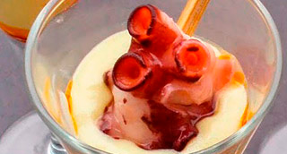

Espuma templada de Patata, Pulpo de roca y Romesco de almendras y piñones
"Una versión actualizada del Pulpo (Espuma) a la Gallega versión mediterránea (Romesco), servida como un pequeño Snack"

| Espuma de Patatas | |
|---|---|
| Patatas | 300 gr. |
| Nata | 100 ml |
| AOVE | 30 ml. |
| Agua cocción (Patatas) | 140 ml. |
| Sal | 1/2 cc. |
| Patas de Pulpo cocidas | 200 gr. |
| AOVE | 20 ml. |
| Romesco | 120 gr. |
| Sal Maldon | 2 gr. |
| Brochetas | 8 un. |
| Cargas de gas | 2 un. |
-
Espuma de Patata
- Cocer las patatas (tipo Monnalisa), cubiertas con agua mineral a ras sin sal. Escurrir reservando el agua de cocción.
- Mezclar con el resto de ingredientes, el agua de cocción, el aceite de oliva, la sal (al gusto) y la nata.
- Triturar con thermomix la crema de patata obtenida debe ser muy fina y no tener grumos para que salga bien por el sifón.
- Introducir en el sifón, colocar dos cargas y agitar.
- Para el servicio mantener en Roner a 50° como máximo. Acabado/Presentación
- Cortar un par de trozos de pulpo por persona. Calentar ligeramente al vapor, a la plancha o en el horno.
- En el fondo de una copa colocar una cucharada de romesco. Disponer la espuma templada de patata.
- Pinchamos las rodajas de pulpo en una brocheta, añadimos unas gotas de aceite y unas escamas de sal maldon.
- Decorar con alguna hierba o brote fresco.